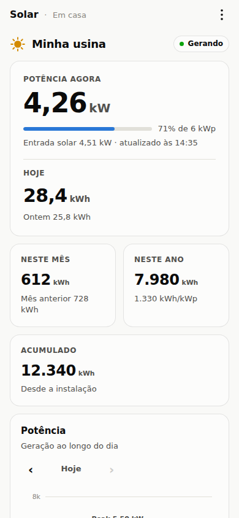
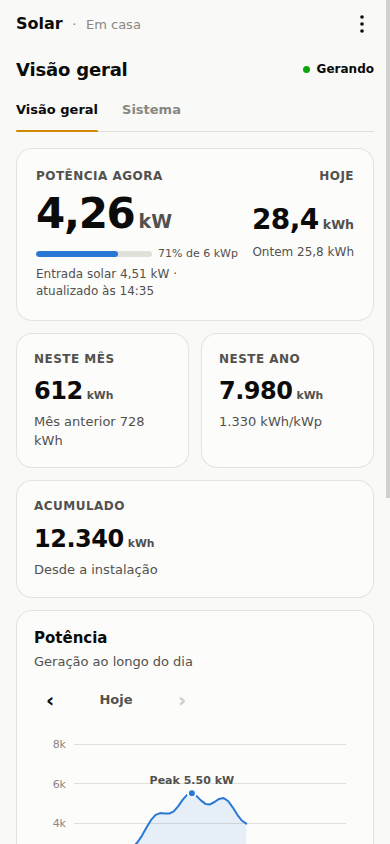

Solar · Refinamentos de interface
A mesma base.
Um pouco mais de espaço.
Duas propostas próximas do painel atual. O foco é diminuir o cabeçalho, tirar a aparência de botão dos três pontos e organizar os detalhes do equipamento sem disputar atenção com a geração.
Versão A · Mais conservadora
Ajuste fino
Mantém a ordem, os cartões e os gráficos atuais.
- Barra compacta de 48 px e menu sem moldura.
- Mais consistência nos espaços e alinhamentos.
- Detalhes do sistema recolhidos no fim da página.

Experimentar versão A →
Versão B · Mais organização
Resumo e sistema
Preserva os gráficos e separa a parte técnica.
- Potência e energia de hoje lado a lado.
- Visão geral com menos altura antes dos gráficos.
- Aba Sistema para stick, inversor e diagnóstico.

Experimentar versão B →
Os protótipos usam dados fictícios e não fazem consultas à API nem ao Modbus. Em cada versão, você pode alternar tema, período dos gráficos e simular problemas de comunicação. Modelo, firmware e alarmes continuam identificados como não consultados.